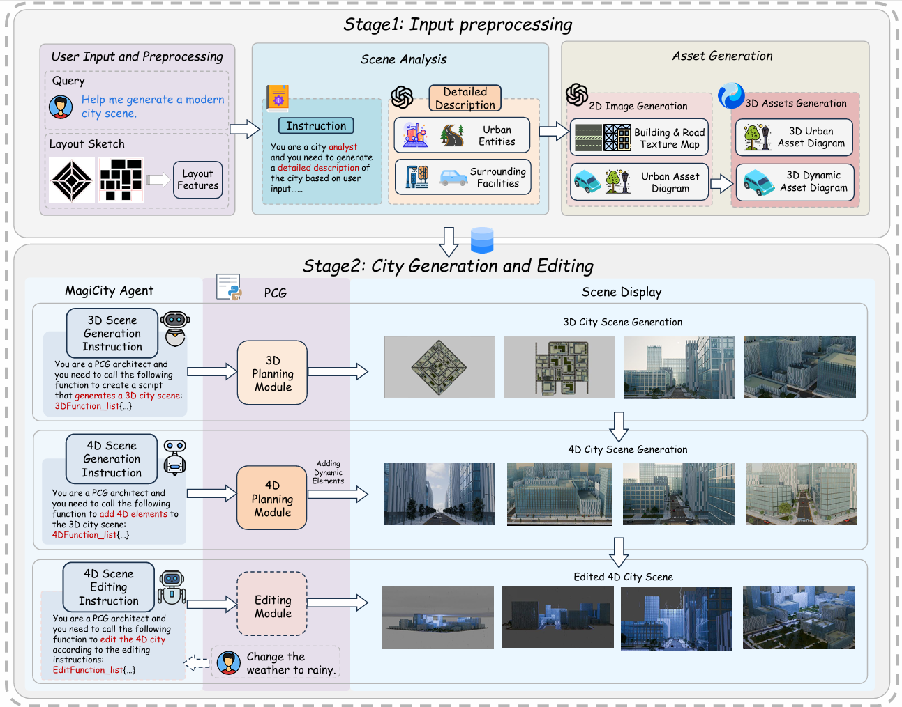

MAGICITY4D: Methodology for Editable and Interactable
4D City Scene Generation by MLLM-powered Procedural Content Generation
Xu Zhang1, Hualong Yu1, Xiaohang Dong1, Qicheng Li1,*
1College of Computer Science, Nankai University, Tianjin, China
*Corresponding author
Abstract
3D city scene generation technology has made significant progress in recent years, 4D city scene generation is more challenging due to its need to incorporate temporal dynamics, placing higher demands on generation system coordination capabilities. To address this dilemma, this paper proposes MagiCity4D, a multimodal 4D city generation framework based on multimodal large language model (MLLM) and ocedural content generation (PCG). This framework deeply integrates MLLM and PCG to enable not only scene generation but also real-time, fine-grained editing of scenes. Experiments demonstrate that the quality of city scenes generated by MagiCity4D outperforms existing methods.

Fig. 1: Pipeline of MagiCity4D